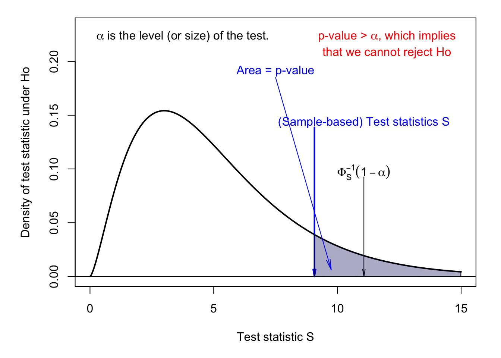

Chapter 3 Statistical tests
We run a statistical test when we want to know whether some hypothesis about a vector of parameters \(\theta\) —that is imperfectly observed— is consistent with data that are seen as random, and whose randomness depend on \(\theta\).
Typically, assume you observe a sample \(\mathbf{x}=\{x_1,\dots,x_n\}\) where the \(x_i\)’s are i.i.d., of mean \(\mu\) and variance \(\sigma^2\) (these two parameters being unobseved). One may want to know whether \(\mu=0\) or, maybe, whether \(\sigma = 1\).
The hypothesis the researcher wants to test is called the null hypothesis. It is often denoted by \(H_0\). It is a conjecture about a given property of a population. Without loss of generality, it can be stated as: \[ H_0:\;\{\theta \in \Theta\}. \] It can also be defined through a function \(h\) (say):3 \[ H_0:\;h(\theta)=0. \]
The alternative hypothesis, often denoted \(H_1\) is then defined by \(H_1:\;\{\theta \in \Theta^c\}\).4
The ingredients of a statistical test are:
- a vector of (unknown) parameters (\(\theta\)),
- a test statistic, that is a function of the sample components (\(S(\mathbf{x})\), say), and
- a critical region (\(\Omega\), say), defined as a set of implausible values of \(S\) under \(H_0\).
To implement a test statistic, we need to know the distribution of \(S\) under the null hypothesis \(H_0\). Equipped, with such a distribution, we compute \(S(\mathbf{x})\) and we look at its location; more specifically, we look whether it lies within the critical region \(\Omega\). The latter corresponds to “implausible” regions of this distribution (typically the tails). If \(S \in \Omega\), then we reject the null hypothesis. Looselly speaking; it amounts to saying: if \(H_0\) were true, it would have been unlikely to get such a large (or small) draw for \(S\).
Hence, there are two possible outcomes for a statisitcal test:
- \(H_0\) is rejected if \(S \in \Omega\);
- \(H_0\) is not rejected if \(S \not\in \Omega\).
Except in extreme cases, there is always a non-zero probability to reject \(H_0\) while it is true (Type I error, or false positive), or to fail to reject it while it is false (Type II error, or false negative).
This vocabulary is widely used. For instance, the notions of false positive and false negative are used in the context of Early Warning Signals (see Example 3.1).
Example 3.1 (Early Warning Signals) These are approaches that aim to detect the occurrence of crises in advance. See, e.g., ECB (2014), for applications to financial crises.
To implement such approaches, researchers look for signals/indices forecasting crises. Suppose one index (\(W\), say) tends to be large before financial crises; one may define an EWS by predicting a crisis when \(W>a\), where \(a\) is a given threshold. It is easliy seen that the lower (respectively higeher) \(a\), the larger the fraction of FP (resp. of FN).
3.1 Size and power of a test
Definition 3.1 (Size and Power of a test) For a given test,
- the probability of type-I errors, denoted by \(\alpha\), is called the size, or significance level, of the test,
- the power of a test is equal to \(1 - \beta\), where \(\beta\) is the probability of type-II errors.
Formally, the previous definitions can be written as follows: \[\begin{eqnarray} \alpha &=& \mathbb{P}(S \in \Omega|H_0) \quad \mbox{(Proba. of a false positive)}\\ \beta &=& \mathbb{P}(S \not\in \Omega|H_1) \quad \mbox{(Proba. of a false negative)}. \end{eqnarray}\]
The power is the probability that the test will lead to the rejection of the null hypothesis if the latter is false. Therefore, for a given size, we prefer tests with high power.
In most cases, there is a trade-off between size and power, whch is easily understood in the EWS context (Example 3.1): increasing the threshold \(a\) reduces the fraction of FP (thereby reducing the size of the test), but it increases the fraction of FN (thereby reducing the power of the test).
3.2 The different types of statistical tests
How to determine the critical region? Loosely speaking, we want the critical region to be a set of “implausible” values of the test statistic \(S\) under the null hypothesis \(H_0\). The lower the size of the test (\(\alpha\)), the more implausible these values. Recall that, by definition of the size of the test, \(\alpha = \mathbb{P}(S \in \Omega|H_0)\). That is, if \(\alpha\) is small, there is only a small probability that \(S\) lies in \(\Omega\) under \(H_0\).
Consider the case where, under \(H_0\), the distribution of the test statistic is symmetrical (e.g., normal distribution or Student-t distribution). In this case, the critical region is usually defined by the union of the two tails of the distribution. The test is then said to be a two-tailed test or a two-sided test. This situation is illustrated by Figures 3.1 and 3.2. (Use this web interface to explore alternative situations.)
Figure 3.2 also illustrates the notion of p-value (in the case of a two-sided test). The p-value can be defined as the value of the size of the test \(\alpha\) that is such that the computed test statistic, \(S\), is at the “frontier” of the critical region. Given this definition, if the p-value is smaller (respectively larger) than the size of the test, we reject (resp. cannot rejet) the null hypothesis at the \(\alpha\) significance level.

Figure 3.1: Two-sided test. Under \(H_0\), \(S \sim t(5)\). \(\alpha\) is the size of the test.

Figure 3.2: Two-sided test. Under \(H_0\), \(S \sim t(5)\). \(\alpha\) is the size of the test.
Figures 3.3 and 3.4 illustrate the one-tailed, or one-sided situation. These tests are typically employed when the distribution of the test statistic under the null hypothesis has a support on \(\mathbb{R}^+\) (e.g., the chi-square distribution \(\chi^2\), see Def. 9.13). Figure 3.4 also illustrates the notion of p-value associated with a one-sided statistical test.

Figure 3.3: One-sided test. Under \(H_0\), \(S \sim \chi^2(5)\). \(\alpha\) is the size of the test.

Figure 3.4: One-sided test. Under \(H_0\), \(S \sim \chi^2(5)\). \(\alpha\) is the size of the test.
Example 3.2 (A practical illustration of size and power) Consider a factory that produces metal cylinders whose diameter has to be equal to 1 cm. The tolerance is \(a=0.01\) cm. More precisely, more than 90% of the parts have to satisfy the tolerance for the whole production (say 1.000.000 parts) to be bought by the client.
The production technology is such that a proportion \(\theta\) (imperfectly known) of the parts does not satisfy the tolerance. The (population) parameter \(\theta\) could be computed by measuring all the parts but this would be costly. Instead, it is decided that \(n \ll 1.000.000\) parts will be measured. In this context, the null hypothesis \(H_0\) is \(\theta < 10\%\). The producing firm would like \(H_0\) to be true.
Let us denote by \(d_i\) the binary indicator defined as: \[ d_i = \left\{ \begin{array}{cll} 0 & \mbox{if the size of the $i^{th}$ cylinder is in $[1-a,1+a]$;}\\ 1 & \mbox{otherwise.} \end{array} \right. \]
We set \(x_n=\sum_{i=1}^n d_i\). That is, \(x_n\) is the number of measured parts that do not satisfy the tolerance (out of \(n\)).
The decision rule is: accept \(H_0\) if \(\dfrac{x_n}{n} \le b\), reject otherwise. A natural choice for \(b\) is \(b=0.1\). However, this would not be a conservative choice, since it remains likely that \(x_n<0.1\) even if \(\mathbb{E}(x_n)=\theta>0.1\) (especially if \(n\) is small). Hence, if one chooses \(b=0.1\), the probability of false negative may be high.
In this simple example, the size and the power of the test can be computed analytically. The test statistic is \(S_n=\frac{x_n}{n}\) and the critical region is \(\Omega = [b,1]\). The probability to reject \(H_0\) is: \[\begin{eqnarray*} \mathbb{P}_\theta(S_n \in \Omega) = \sum_{i=b \times n+1}^{n}C_{n}^i\theta^i(1-\theta)^{n-i}. \end{eqnarray*}\]
When \(\theta<0.1\), the previous expression gives the size of the test, while it gives the power of the test when \(\theta>0.1\). Figure 3.5 shows how this probability depends on \(\theta\) for two sample sizes: \(n=100\) (upper plot) and \(n=500\) (lower plot).

Figure 3.5: Factory example.
(Alternative situations can be explored by using this web interface.)
3.3 Asymptotic properties of statistical tests
In some cases, the distribution of the test statistic is known only asymptotically. For instance, it may be the case that the distribution of a given test statistic becomes normal only in large samples (e.g., related to the CLT, see Section 2). The level of the test is then not know for small sample sizes, but only asymptotically, i.e., when \(n\) becomes infinitely large. That defines the asymptotic level of the test:
Definition 3.2 (Asymptotic level) An asymptotic test with critical region \(\Omega_n\) has an asymptotic level equal to \(\alpha\) if: \[ \underset{\theta \in \Theta}{\mbox{sup}} \quad \underset{n \rightarrow \infty}{\mbox{lim}} \mathbb{P}_\theta (S_n \in \Omega_n) = \alpha. \]
Example 3.3 (The factory example) Let us come back to the factory example (Example 3.2). Because \(S_n =\bar{d}_n\), and since \(\mathbb{E}(d_i)=\theta\) and \(\mathbb{V}ar(d_i)=\theta(1-\theta)\), the CLT (Theorem 2.2) leads to: \[ S_n \sim \mathcal{N}\left(\theta,\frac{1}{n}\theta(1-\theta)\right) \quad or \quad \frac{\sqrt{n}(S_n-\theta)}{\sqrt{\theta(1-\theta)}} \sim \mathcal{N}(0,1). \]
Hence, \(\mathbb{P}_\theta (S_n \in \Omega_n)=\mathbb{P}_\theta (S_n > b) \approx 1-\Phi\left(\frac{\sqrt{n}(b-\theta)}{\sqrt{\theta(1-\theta)}}\right)\). Since function \(\theta \rightarrow 1-\Phi\left(\frac{\sqrt{n}(b-\theta)}{\sqrt{\theta(1-\theta)}}\right)\) increases w.r.t. \(\theta\), we have: \[ \underset{\theta \in \Theta=[0,0.1]}{\mbox{sup}} \quad \mathbb{P}_\theta (S_n > b_n) = \mathbb{P}_{\theta=0.1} (S_n \in \Omega_n)\approx\] \[ 1-\Phi\left(\frac{\sqrt{n}(b_n-0.1)}{0.3}\right). \] Hence, if we set \(b_n = 0.1 + 0.3\Phi^{-1}(1-\alpha)/\sqrt{n}\), we have \({\mbox{sup}}_{\theta \in \Theta=[0,0.1]} \quad \mathbb{P}_\theta (S_n > b_n) \approx \alpha\) for large values of \(n\).
Let us now turn to the power of the test. Although it is often difficult to compute the power of the test, it is sometimes feasible to demonstrate that the power of the test converges to one when \(n\) goes to \(+\infty\). In that case, if \(H_0\) is false, the probability to reject it tends to be close to one in large samples.
Definition 3.3 (Asymptotically consistent test) An asymptotic test with critical region \(\Omega_n\) is consistent if: \[ \forall \theta \in \Theta^c, \quad \mathbb{P}_\theta (S_n \in \Omega_n) \rightarrow 1. \]
Example 3.4 (The factory example) Let us come back to the factory example (Example 3.2). We proceed under the assumption that \(\theta>0.1\) and we consider \(b_n = b = 0.1\). We still have: \[ \mathbb{P}_\theta (S_n \in \Omega_n)=\mathbb{P}_\theta (S_n > b) \approx 1-\Phi\left(\frac{\sqrt{n}(b-\theta)}{\sqrt{\theta(1-\theta)}}\right). \]
Because \(\frac{\sqrt{n}(b-\theta)}{\sqrt{\theta(1-\theta)}} \underset{n \rightarrow \infty}{\rightarrow} -\infty\), we have \[ \mathbb{P}_\theta (S_n > b) \approx 1- \underbrace{\Phi\left(\frac{\sqrt{n}(b-\theta)}{\sqrt{\theta(1-\theta)}}\right)}_{\underset{n \rightarrow \infty}{\rightarrow} 0} \underset{n \rightarrow \infty}{\rightarrow} 1. \] Therefore, with \(b_n=b=0.1\), the test is consistent.
3.4 Example: Normality tests
Because many statistical results are valid only if the underlying data is normally distributed, researchers often have tu conduct normality tests. Under the null hypothesis, the data at hand (\(\mathbf{y}=\{y_1,\dots,y_n\}\), say) are drawn from a Gaussian distribution. A popular normality test is the Jarque-Bera test. It consists in verifying that the sample skewness and kurtosis of the \(y_i\)’s are consistent with those of the normal distribution. Let us first define the skewness and kurtosis of a random variable.
Let \(f\) be the p.d.f. of \(Y\). The \(k^{th}\) standardized moment of \(Y\) is defined as: \[ \psi_k = \frac{\mu_k}{\left(\sqrt{\mathbb{V}ar(Y)}\right)^k}, \] where \(\mathbb{E}(Y)=\mu\) and \[ \mu_k = \mathbb{E}[(Y-\mu)^k]= \int_{-\infty}^{\infty} (y-\mu)^k f(y) dy \] is the \(k^{th}\) central moment of \(Y\). In particular, \(\mu_2 = \mathbb{V}ar(Y)\). Using these notations, \(\psi_k\) rewrites: \[ \psi_k = \frac{\mu_k}{\left(\mu_2^{1/2}\right)^k}, \]
The skewness of \(Y\) corresponds to \(\psi_3\) and the kurtosis to \(\psi_4\) (Def. 9.6).
Proposition 3.1 (Skewness and kurtosis of the normal distribution) For a Gaussian var., the skewness (\(\psi_3\)) is 0 and the kurtosis (\(\psi_4\)) is 3.
Proof. For a centered Gaussian distribution, \((-y)^3f(-y)=-y^3f(y)\). This implies that \[\begin{eqnarray*} \int_{-\infty}^{\infty}y^3f(y)dy&=&\int_{-\infty}^{0}y^3f(y)dy+\int_{0}^{\infty}y^3f(y)dy\\ &=&-\int_{0}^{\infty}y^3f(y)dy+\int_{0}^{\infty}y^3f(y)dy=0, \end{eqnarray*}\] which leads to the skewness result.
Moreover, for a Gaussian distribution, \(df(y)/dy=-yf(y)\) and therefore \(\frac{d}{dy}(y^3f(y))=3y^2f(y)-y^4f(y)\). Partial integration leads to the kurtosis result.
Let us now introduce the sample analog of standardized moments. The \(k^{th}\) central sample moment of \(Y\) is given by: \[ m_k = \frac{1}{n}\sum_{i=1}^n(y_i - \bar{y})^k, \] and the \(k^{th}\) standardized sample moment of \(Y\) is given by: \[ g_k = \frac{m_k}{m_2^{k/2}}. \]
Proposition 3.2 (Consistency of central sample moments) If the \(k^{th}\) central moment of \(Y\), exists and if the \(y_i\)’s are i.i.d., then the sample central moment \(m_k\) is a consistent estimate of the central moment \(\mu_k\).
Proposition 3.3 (Asymptotic distribution of 3rd-order sample central moment of a normal distribution) If \(y_i\sim\,i.i.d.\,\mathcal{N}(\mu,\sigma^2)\), then \(\sqrt{n}g_3 \overset{d}{\rightarrow} \mathcal{N}(0,6)\).
Proof. See, e.g. Lehmann (1999).
Proposition 3.4 (Asymptotic distribution of 4th-order sample central moment of a normal distribution) If \(y_i\sim\,i.i.d.\,\mathcal{N}(\mu,\sigma^2)\), then \(\sqrt{n}(g_4-3) \overset{d}{\rightarrow} \mathcal{N}(0,24)\).
Proposition 3.5 (Joint asymptotic distribution of 3rd and 4th-order sample central moments of a normal distribution) If \(y_i\sim\,i.i.d.\,\mathcal{N}(\mu,\sigma^2)\), then the vector \((\sqrt{n}g_3,\sqrt{n}(g_4-3))\) is asymptotically bivariate Gaussian. Further its elements are uncorrelated (and therefore independent, because Gaussian).
The Jarque-Bera statistic is defined by: \[ JB = n \left( \frac{g_3^2}{6}+\frac{(g_4-3)^2}{24} \right) = \frac{n}{6}\left(g_3^2 + \frac{(g_4-3)^2}{4}\right). \]
Proposition 3.6 (Jarque-Bera asympt. distri.) If \(y_i\sim\,i.i.d.\,\mathcal{N}(\mu,\sigma^2)\), \(JB \overset{d}{\rightarrow} \chi^2(2)\).
Proof. This directly derives from Proposition 3.5.
Example 3.5 (Consistency of the Jarque-Bera normality test) This example illustrates the consistency of the JB test (see Def. 3.3).
For each row of matrix x, the function JB (defined below) computes the Jarque-Bera test statistic. (That is, each row is considered as a given sample.)
Code
JB <- function(x){
N <- dim(x)[1] # number of samples
n <- dim(x)[2] # sample size
x.bar <- apply(x,1,mean)
x.x.bar <- x - matrix(x.bar,N,n)
m.2 <- apply(x.x.bar,1,function(x){mean(x^2)})
m.3 <- apply(x.x.bar,1,function(x){mean(x^3)})
m.4 <- apply(x.x.bar,1,function(x){mean(x^4)})
g.3 <- m.3/m.2^(3/2)
g.4 <- m.4/m.2^(4/2)
return(n*(g.3^2/6 + (g.4-3)^2/24))
}Let us first consider the case where \(H_0\) is satisfied. Figure 3.6 displays, for different sample sizes \(n\), the distribution of the JB statistics when the \(y_i\)’s are normal, consistently with \(H_0\). It appears that when \(n\) grows, the distribution indeed converges to the \(\chi^2(2)\) distribution (as stated by Proposition 3.6). The \(\chi^2(2)\) distribution is represented in red on each plot.
Code
all.n <- c(5,10,20,100)
nb.sim <- 10000
y <- matrix(rnorm(nb.sim*max(all.n)),nb.sim,max(all.n))
par(mfrow=c(2,2));par(plt=c(.1,.95,.15,.8))
for(i in 1:length(all.n)){
n <- all.n[i]
hist(JB(y[,1:n]),nclass = 200,freq = FALSE,
main=paste("n = ",toString(n),sep=""),xlim=c(0,10))
xx <- seq(0,10,by=.01)
lines(xx,dchisq(xx,df = 2),col="red")
}
Figure 3.6: Distribution of the JB test statistic under \(H_0\) (normality).
Now, replace rnorm with runif. The \(y_i\)’s are then drawn from a uniform distribution. \(H_0\) is not satisfied. Figure 3.7 then shows that, when \(n\) grows, the distributions of the JB statistic shift to the right. This results in the consistency of the JB test (see Def. 3.3).

Figure 3.7: Distribution of the JB test statistic when the \(y_i\)’s are drawn from a uniform distribution (hence \(H_0\) is not satisfied).